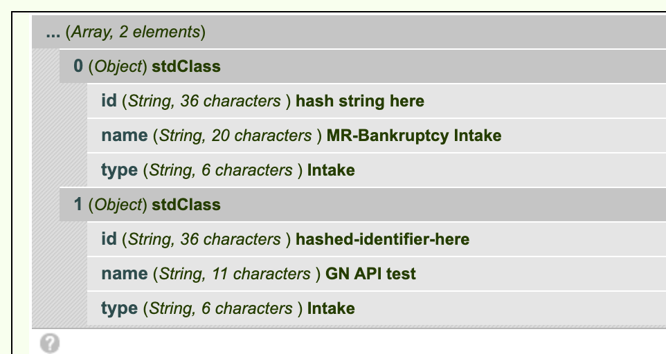

Guided Navigation API¶
API Configuration¶
ILAO stores in Drupal configuration:
API Server location (https://[sitename].legalserver.org/api/v1 for example)
Username authorized to use API
Password associated with the username
API Invocations¶
Get list of processes¶
curl -u username:password https://iloi-demo.legalserver.org/api/v1/processes
This code snippet returns the list of processes available to Guided navigation
$gn = ilao_gn_load_keys();
$url = $gn['server'];
$ch = curl_init();
curl_setopt($ch, CURLOPT_URL, $url);
curl_setopt($ch, CURLOPT_RETURNTRANSFER, 1);
curl_setopt($ch, CURLOPT_HTTPAUTH, CURLAUTH_BASIC);
curl_setopt($ch, CURLOPT_USERPWD, $gn['user'] . ':' . $gn['pass']);
$result = curl_exec($ch);
$processes = json_decode($result);
return $processes;
The resulting json contains an array of objects. The objects contain:
id. This id is used throughout the system to identify which guided navigation process is involved in a transaction.
name. The name in LegalServer of the process
type. The type of process
When decoded, in Drupal this results in an array of objects as follows:
Start a new session for a specific Guided Navigation process¶
curl –request POST -u “username:password” https://iloi-demo.legalserver.org/api/v1/processes/[process-id]/sessions
$gn = ilao_gn_load_keys();
$url = $gn['server'] . '/' . $process_id . '/sessions';
$ch = curl_init();
curl_setopt($ch, CURLOPT_URL, $url);
curl_setopt($ch, CURLOPT_CONNECTTIMEOUT, 20);
curl_setopt($ch, CURLOPT_CUSTOMREQUEST, "POST");
curl_setopt($ch, CURLOPT_POST, true);
curl_setopt($ch, CURLOPT_RETURNTRANSFER, true);
curl_setopt($ch, CURLOPT_USERPWD, $gn['user'] . ':' . $gn['pass']);
curl_setopt($ch, CURLOPT_SSL_VERIFYPEER, false);
curl_setopt($ch, CURLOPT_HTTPAUTH, CURLAUTH_BASIC);
curl_setopt($ch, CURLOPT_HTTPHEADER, array(
'Accept: application/json',
'Content-Type: application/json')
);
$result = curl_exec($ch);
$start = json_decode($result);
return $start;
Note
in the above example, $process_id represents the process ID from the list of processes.
This will result in a JSON object that includes the first form from the Guided Navigation dialogue
{"process_session_id":"523d0bc8-9f4d-473e-94cd-510ae576e160",
"profile":{"id":"fcdc0494-0190-11eb-995e-0e8d40a13cd5"},
"profile_by_element_id":{"9f992bff-adca-4ae2-a6e4-9b478573b298":null,
"25428520-5992-4638-ab45-a325af4f086b":null},
"form":{"id":"5ef8cb29-0d0e-457b-a8a6-4d6b2983344a",
"elements":[{"id":"9f992bff-adca-4ae2-a6e4-9b478573b298",
"has_display_logic":false,
"display_logic":null,
"field_name":"mr_service_area_49",
"label":"What service area do you live in?",
"type":"field",
"field_type":"select",
"validation_rules":[],
"value":null,
"options":[{"value":1,
"label":"Cook"},
{"value":2,
"label":"PSLS"},
{"value":3,
"label":"LOLLA"}],
"is_multiple":false},
{"id":"25428520-5992-4638-ab45-a325af4f086b",
"has_display_logic":false,
"display_logic":null,
"field_name":"mr_ilao_legal_issue_58",
"label":"Please describe your legal issue",
"type":"field",
"field_type":"text",
"validation_rules":[],
"value":""}],
"validation_errors":[],
"is_complete":false,
"should_show_previous":false}}
The resulting JSON when decoded into a Drupal format results in
a process_session_id (string). This is used for the entire user’s session
a profile (object). This is updated over time as new data is gathered
a profile_by_element_id (object).
a form object. This contains all the information about the form to display.
Getting the current state¶
curl -u “username:password” https://iloi-demo.legalserver.org/api/v1/processes/[process-id]/sessions/[profile-session-id]
This will return the same code as when creating a session but with the current profile data and form.
Submit data to Guided Navigation¶
Submitting data to Guided Navigation requires:
the process id
the specific session id (profile session id)
the unique form id
the data
The data must be passed as a JSON array of the individual element id:form value.
Examples¶
curl –header “Content-Type: application/json” –request PUT -u “username:password” –data ‘{“71e665e7-29e4-47fb-8c9e-f93f2654f485”:19}’ https://iloi-demo.legalserver.org/api/v1/processes/[process-id]/sessions/[profile-session-id]/forms/[form-id]
curl –header “Content-Type: application/json” –request PUT -u “username:password” –data ‘{{“25428520-5992-4638-ab45-a325af4f086b”:”cut”}{“57d0988a-dfe6-4af3-bfab-4813ad3396fb”:1}}’ https://iloi-demo.legalserver.org/api/v1/processes/[process-id]/sessions/[profile-session-id]/forms/[form-id]
$gn = ilao_gn_load_keys();
$url = $gn['server'] . '/' . $intake_id . '/sessions/' . $process_id . '/forms/' . $gn_form_id;
$data = json_encode($data);
$ch = curl_init();
curl_setopt($ch, CURLOPT_URL, $url);
curl_setopt($ch, CURLOPT_CONNECTTIMEOUT, 20);
curl_setopt($ch, CURLOPT_CUSTOMREQUEST, "PUT");
curl_setopt($ch, CURLOPT_POSTFIELDS, $data);
curl_setopt($ch, CURLOPT_RETURNTRANSFER, true);
curl_setopt($ch, CURLOPT_USERPWD, $gn['user'] . ':' . $gn['pass']);
curl_setopt($ch, CURLOPT_SSL_VERIFYPEER, false);
curl_setopt($ch, CURLOPT_HTTPAUTH, CURLAUTH_BASIC);
curl_setopt($ch, CURLOPT_HTTPHEADER, array(
'Accept: application/json',
'Content-Type: application/json')
);
$result = curl_exec($ch);
$response = json_decode($result);
Note
In the above, it expects 4 variables to be available:
intake_id which is the guided navigation process id
process id which is the specific process session id
gn_form_id which is the specific form id
data, which is an array of field ID and value.